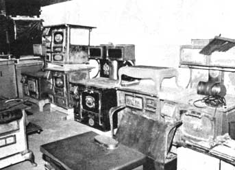

Antique Stove Wood-Burner Restoration
Bill Eckert explains how to restore an antique wood stove.
By Barry Dordahl
September/October 1979
There's new life-and a living-in that old stove
Antique wood-burning cookstoves and heaters-exquisitely restored to their original elegance-are making a comeback . . . both as tools to cook vittles or heat houses and as investments whose values recently have run well ahead of inflation.
Unfortunately, all this new-found popularity has caused the price of such refurbished stoves to go plumb through the roof. Or so I thought until Bill Eckert (owner of Friendly Fire, Inc. in Fort Collins, Colorado) explained how just about anyone could own a fine antique without paying a collector's price. The secret? Find a grizzled old timber toaster in need of a friend, and restore it yourself!
But what if you don't know how to refurbish a stove? Well . . . hang on. 'Cause-with Bill's expert helpI'm about to tell you. All you'll need to "play along" are a few common hand stools, some inexpensive supplies, a good electric drill with rotary wire brushes, and-of course-a stove.
WHERE TO FIND THOSE OLDIES
Any town that's over 50 years old probably has an abundance of used stoves just rusting away and waiting for someone to claim them. The reason is an all-too-common one: "When cheap gas and oil became available," says Bill, "wood stoves were carted out to the yard and abandoned." One of the best ways to find these "experienced" wood-burners is to run a want ad in the paper of a likely burg. Or simply hop in your buggy and go for a drive. I've spotted "oldies" just by roaming around . . . and in each case the owner was delighted to sell. Try antique dealers, too. They very often have -or know of-old stoves for sale. (And since the demand for reconditioned models is so high, dealers might pay you to do restoration for them!) With a little effort, you should find-right close to home-all the projects you'll ever want.
BUT CAN IT BE SAVED?
Before you fork over your hard-earned dollars for a particular stove, take a few minutes to inspect it. Be sure that antique really can be salvaged.
First off, IS THE BODY SOUND? Most any abandoned wood-burner will be g rusty, and that's OK . . . as long as the metal under that rust is still healthy. Potbellied heaters usually were built of m cast iron heavy enough to shrug off decades of oxidation. But base-burners-self-feeding heaters built of cast iron and sheet metal-might have weak points. Tap a few suspicious-looking spots with a screwdriver, if you're not totally confident. Since old kitchen ranges were generally made of lighter material, check their rusty parts with particular care . . . to be sure you have something to restore. Inspect the top, bottom, sides, and insides.
Also, when buying a used range, make certain that the oven control (most often a slide or flipflop damper that directs exhaust heat to the oven) is alive and working. If you don't know what you're looking for, find a stove that is operating properly and see how it works.
Next, LOOK FOR CRACKS. Cast-iron parts are the most likely to be damaged, so scrutinize all cast sections . . . such as the bodies of potbellies and the tops and fireboxes of cookstoves. Hairline fractures may be OK, but anything bigger presents a problem, especially when the "split" is in the firebox itself. "I wouldn't try to redo a stove for actual use if it had even a tiny crack in the fire chamber," says Eckert. (Though iron can be welded, not many welders do it right, and the first blaze might fracture an improperly repaired stove all over again.)
After a prospect has passed the soundness and crack tests, EXAMINE THE TRIM. (On ranges, this decoration may be an integral part . . . like the frame.) Brightwork should be nickel-plated (occasionally copper or brass), but if the critter's been sitting outside for a long while, you might see nothing but corrosion. You can test to see if the trim's salvageable by polishing the worst spot with Brasso-available from your hardware store-and 0-gauge steel wool.
Should the trim on a heater be suffering from terminal oxidation, you can have it replated . . . probably for under $100. The bric-a-brac from a range can also be touched up in this manner, but only if you can get it off. In the event that the ruined trim on that cookstove is welded on-or if the stove obviously won't hold together without it-better look elsewhere.
In addition, damage to the porcelain trim-which you'll find on some woodburners-is often sufficient cause for rejecting the stove. Though the ceramic surface is easy enough to clean, the process for repairing chips is prohibitively expensive. So if you can't live with the condition of the porcelain on a cooker or heater . . . don't buy it!
Some old wood-burners have "windows" (or, by the time you get to them, open holes). These viewing ports are usually covered with isinglass, and-if the frames are still intact-small "panes" can be easily and inexpensively replaced.
Once more then: Before you commit yourself, be sure the necessary repairs aren't more extensive than you want to tackle. "I still turn down 10 stoves for every one I buy," says Bill. You should be at least as critical.
HOW TO RESTORE OLD STOVES
A client brought the base-burner in the color photographs (dubbed "Curly") to Friendly Fire for a face lift, and Bill purchased the cookstove you see . . . planning to refinish it for resale. We used both wood-burners to illustrate this section. Here's the procedure:
[1] REMOVE THE NICKEL (OR BRASS OR COPPER) TRIM that can be detached from your stove. ( That'll usually be all the brightwork from heaters, but-again-the trim is a working part of some cookstoves. ) Bolts are apt to be rusted, so use lots of Liquid Wrench to help loosen stubborn ones. Rivets and bolts that won't submit to logical persuasion will yield to a hammer and chisel. (Friendly Fire's expert renovator replaces both hex heads and rivets with brass bolts because, he says, "They're easier to install than rivets and look nice with nickel.")
[2] REJUVENATE THE DETACHED TRIM. If the polishing test you did earlier was positive . . . then go ahead and polish the trim with Brasso and 0-gauge steel wool until all the crud is gone. Then give the metal a second shining with another shot of polishing juice and a soft cloth.
If the trim is beyond reconditioning, you'll have to have it replated. Find a metal plater in the Yellow Pages and ar range for the work to be done. (Most platers prefer that you not remove the rust before bringing in your to-be-refurbished piece.) By the way, if the decorative metal is copper or brass-and you plan to use the stove for more than just eyeballing-consider replating the pieces with nickel. The harder metal is more resistant to oxidation. And don't settle for chrome! It'll start turning blue with your first hot fire.
(As it turned out, Curly's trim did need replating . . . the cost was $76. )
[3] REMOVE ISINGLASS WINDOWS AND FRAMES. If you need replacement panes-and if your nearby hardware proprietor isn't able to locate any-you can order isinglass from Friendly Fire ( see the note following this article for the firm's address).
[4] REMOVE RUST FROM: [a] Stoves with trim detached. If all the ornamentation can be removed from your stove, the best way to derust is to have the surface sandblasted. But not with sand . . . it's far too coarse. Instead, you'll want the blasting done with carborundum crystals. Look for this service in the Yellow Pages under "monument works" .. . since carborundum is used to polish gravestones. Or find someone under "sandblasting" who uses the finer abrasive. Have only the exterior of heaters blasted . . . but if it's a cookstove you're rehabilitating, let the "polisher" blast the oven, too. (Poor of Curly needed a scouring, and paid a $30 visit to the monument-maker.)
Of course, if you're dead set against spending money, you can attack rust with a coarse rotary wire brush on your electric drill (be sure to protect your eyes!) but it'll be miserable work.
[b] Stoves with trim attached. The easiest way to remove rust-without damaging shiny alloy trim-is to have the stove dipped in a heated chemical bath by an antique-auto stripper. He'll return it to you spotlessly clean (unless it was rusted worse than you thought . . . in which case you'll get back something as full of holes as a politician's 1040 form). There might be a little new corrosion where the chemical didn't dry immediately, but you can get that off with the wire brush and electric drill. And-while you're at it-you might as well do the oven, too.
(Bill's cookstove needed to be dipped rather than blasted . .. the stripper charged $135.)
[c] Stoves with porcelain trim.. Assuming that the ceramic parts won't come off-and they usually won't-you'll have to go after rusted metal with that coarse rotary wire brush and electric drill. Porcelain won't tolerate dipping or sandblasting, but it will spruce up nicely with a basin-tub-and-tile cleaner and a wet sponge.
[5] POLISH THE REMAINING BRIGHTWORK with Brasso and a soft cloth. If there's any lingering crud, use another wad of 0-gauge steel wool for the first pass.
[6] PAINT THE OVEN of your cookstove with stainless steel paint (in a spray can from your paint shop or from Bill at Friendly Fire).
[7] PAINT OR POLISH EXTERIOR STOVE PARTS, but protect the trim! Any cast-iron cooking surfaces should only be polished. On other areas you may interchange paint and polish as you choose.
Bill generally prefers stove polish to paint. He makes his own, but recommends-for "one timers"-Presto Stove Polish (at hardware stores or from the manufacturer at Dept. TMEN, P.O. Box 57, Campbellsville, Kentucky 42718). Brush on the polish with a toothbrush, covering the entire surface thoroughly. Let the brightener dry for a whole day. Then give your heater a second coat, and let that dry for another 24 hours. After the second day, "buff" the stove-using a fine rotary wire brush on your electric drill-until all residue is removed. Finish up by rubbing the polish with a soft cloth.
Often-for contrast-Eckert will paint some or all of the sheet-metal parts with Thurmalox Stove Paint (as recommended in MOTHER NO. 53, page 108), but both sample stoves were polished.
[8] REPLACE ANY TRIM THAT WAS REMOVED.
[9] REPLACE ISINGLASS WINDOWS. Isinglass-which is made from the soft mineral, mica-is easy to work with. Just cut it to size with a pair of scissors.
[10] GIVE THE WOOD-BURNER A FINAL TOUCHUP with a soft cloth before standing back for a look-see. If the sun's shining . . . watch your eyes!
ECONOMICS: RESTORING STOVES FOR PROFIT
Curly cost its owner $150 "as was". Bill charged an additional $100 for 10 hours of refurbishing work (Eckert always charges per hour what his customers earn per hour) and passed on both the $30 cost of sandblasting and the $76 for nickel-plating. Thus, Curly's owner spent $356 for a stove that's easily worth $500.
Bill bought the cookstove for $275. Fifty-one hours of labor and $135 (the stripper's fee) later, he sold the refinished stove for $1,000.
Now let's suppose you had purchased both of the stoves and rejuvenated them yourself. You'd own a fine base-burner for which you paid only $256 ($150 + $30 + $76). And you'd have an excellent cookstove for an out-of-pocket cost of $410. You could sell both wood-burners for a profit of over $800. Or you could keep them, put them to work, and watch their values skyrocket. Think about it for a minute: Your wealth would increase while it worked for you. That darn sure won't happen when your money's in a bank!
YOU CAN DO IT
You now know enough of the basics to find and restore an old stove of your own. (And maybe begin a home business, too! ) I won't say it's easy . . . stove restoration is both timeconsuming and messy. But when you finally stand aside to admire a gleaming work of art-transformed from a rusting hulk-somehow all the labor seems worthwhile.
EDITOR'S NOTE: If you're having a hard time finding stove-restoration materials or you need some suggestions, write to Friendly Fire, Inc., Dept. TMEN, 1802 Laporte Avenue, Fort Collies, Colorado 80521. (Include a stamped envelope and a dollar or two for information as a friendly gesture.) Also, if you come across a truly exceptional stove (or even literature about old stoves), Bill Eckert just might be interested in purchasing it.
 This array of wood cookstoves?lining the wall of Friendly Fire's workshop?represents a very impressive (as well as virtually inflation-proof) ""savings account""! |
 |
|